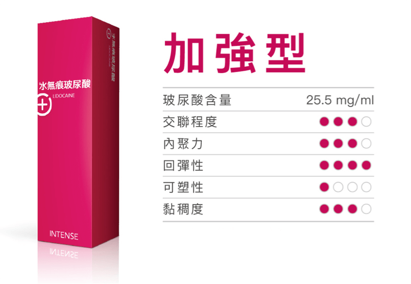
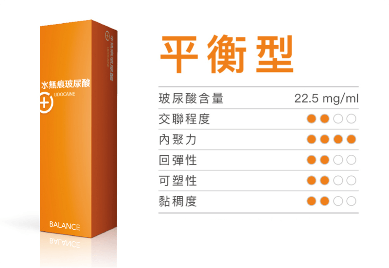
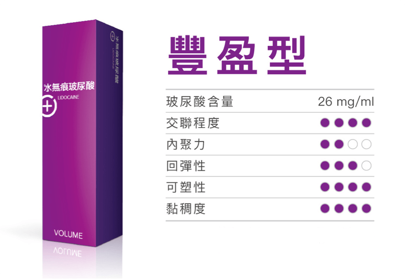

如果您希望填充劑可與肌膚完美融合，帶來自然的效果，協助減齡，水無痕玻尿酸系列是您的最佳首選。

柔軟型

加強型

平衡型

豐盈型
注意事項：
CPM 專利技術
1,2水無痕玻尿酸的 CPM (Cohesive Polydensified Matrix)專利技術克服施打凹凸不平的這項缺點，透過泛白技術，使玻尿酸與肌膚自然融合。
水無痕玻尿酸系列可細緻的處理眼睛部位，減少老化。避免在眼周引起團塊(像毛毛蟲一般)及泛藍光的「騰德爾效應 (tyndall effect)」（騰德爾效應是因為光線被含有懸浮膠體顆粒的玻尿酸所散射，泛出亮白藍光）
專利 CPM 技術研發出的玻尿酸可客製化雕塑，修飾臉部線條，不用擔心走山或位移，能與臉部組織完美融合。
*含有利多卡因，能有效降低疼痛
Micheels P, Besse S, Flynn TC, et al. Superficial dermal injection of hyaluronic acid soft tissue fillers: comparative ultrasound study. Dermatol Surg. 2012 Jul;38(7 Pt 2):1162-9.
Prager W, Kerscher M. Investigator and subject satisfaction: results from a randomized, evaluator-blinded, split-face study. Podium presentation at 5CC Conference, Cannes, France (September 3, 2015- September 6, 2015).
* 水無痕玻尿酸含利多卡因。
如果您希望填充劑可與肌膚完美融合，帶來自然的效果，協助減齡，水無痕玻尿酸系列是您的最佳首選。
柔軟型
加強型
平衡型
豐盈型
水無痕玻尿酸有平衡完美的流變屬性，因此能與皮膚組織無縫融合，帶來可預測且協調的效果。過去玻尿酸施打在表淺真皮層容易凹凸不平，有時甚至會看到產品施打痕跡，撫平細紋的效果不佳。水無痕玻尿酸擁有CPM專利技術，內聚性高可預期玻尿酸與皮膚的結合力強，醫師可運用泛白技術，施打在表淺真皮層，達到與肌膚自然貼合的效果。
水無痕玻尿酸不僅能處理動態或靜態紋路，並可以填補臉部的凹陷，達到豐盈飽滿的效果。療程過後氣色看起來會變好、更有精神，且依然能做自己展現各種表情。
通常療效是立即的，不需任何後續的休息時間，大多數的患者在單次療程後可以立即繼續日常活動。
所有的玻尿酸療程都可能在注射期間輕微的出血，並在注射結束時自然消失。在少數情況下可能會短暫出現皮膚紅腫、點狀出血或瘀青，但這些現象皆為暫時性的，通常幾天內就會消失。在療程前您的醫師會再詳細說明。
小小進廠維修進度報告🙈
最近覺得素顏氣色都變好了，平常上班都不用化妝😎
這次進廠維修的項目是水無痕玻尿酸！！！...
我因為淚溝很深的關係😭
每隔一至兩年都會做玻尿酸填補
所以我也算是玻尿酸注射的老手了！...